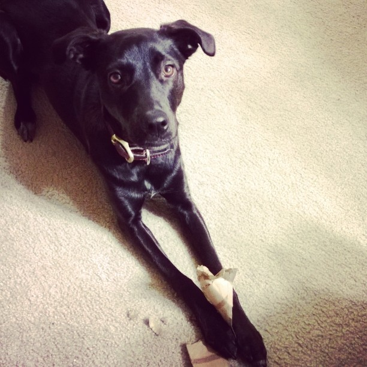
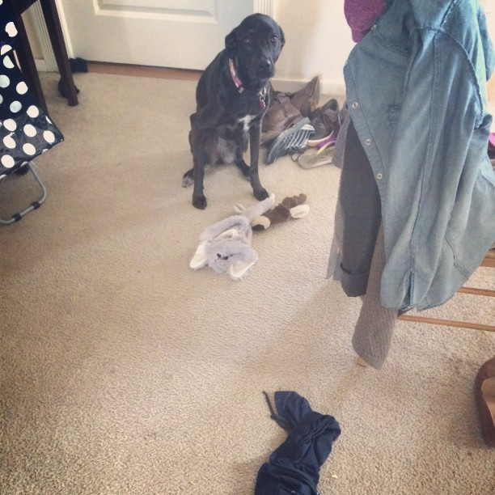
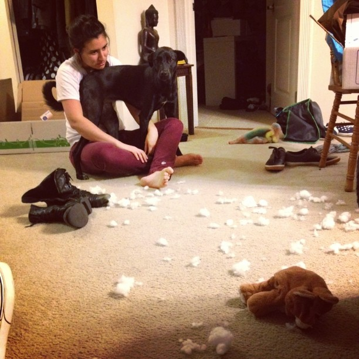
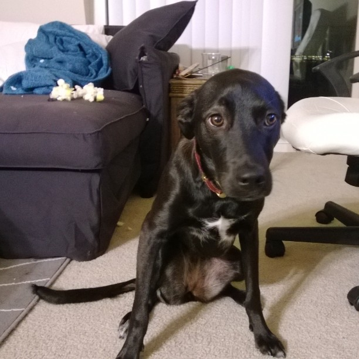
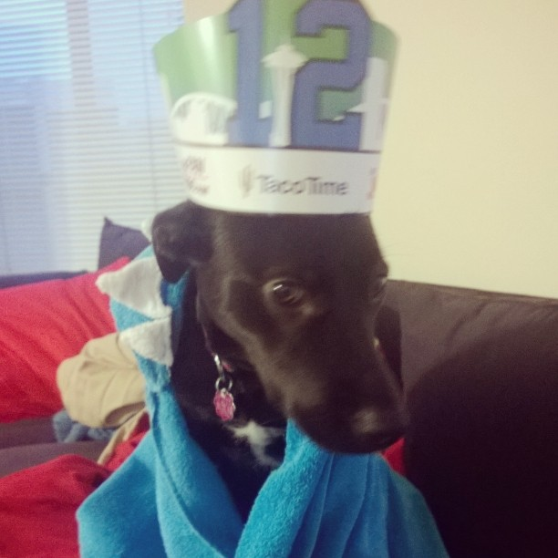
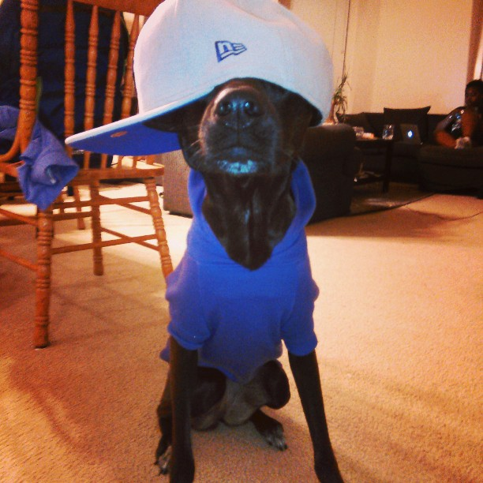
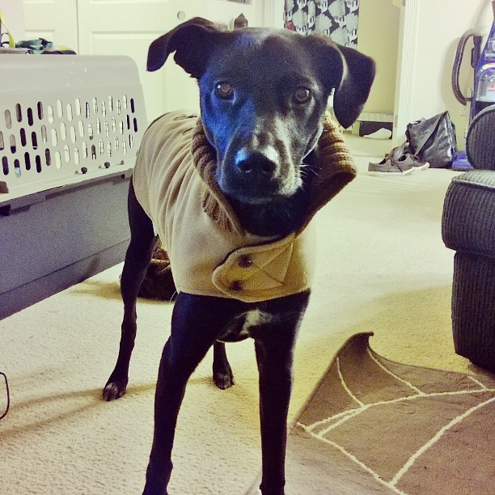
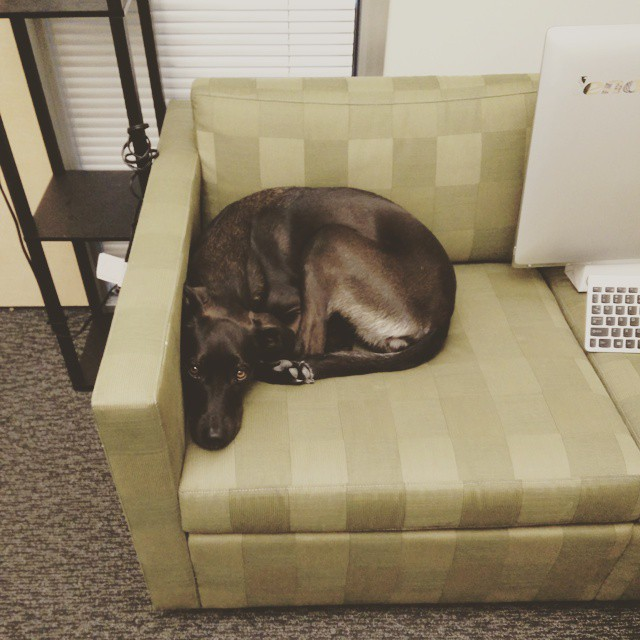
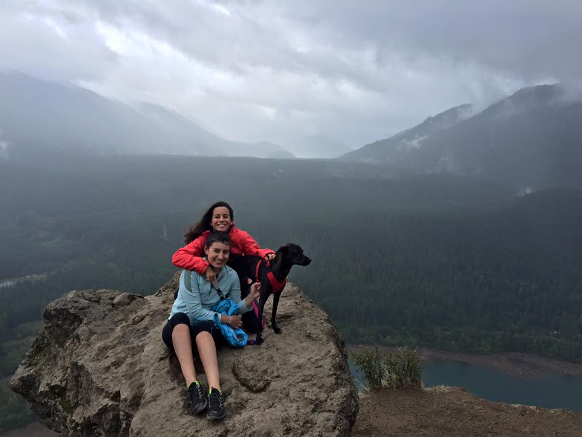

Roughly two and a half years ago, I walked into the Ft. Lauderdale Animal Shelter just to "take a look." This was mistake number one. There is no such thing as taking a look.
My mom and I wandered through the rows of 200+ dogs noting down several names. It was towards the end of our visit we laid our eyes on Kepler (who at the time was called Brownie). She was sitting quietly as her assumed brother bit her and tackled her and acted crazy. We pet her through the cage edge and she was the sweetest thing. Here is the first picture ever taken of her - in hindsight, you can see the deception in those giant brown eyes.

Things progressed and before I knew it I was the new owner of a puppy - one that seemed content to just sit in your lap and cuddle. This was a lie. Mistake Number 2.
We picked her up from the shelter and for a whole 24 hours, it was calm and peaceful and sunshine and rainbows. And with a snap of the fingers, something changed and the monster emerged. We theorized that maybe the drugs had worn off (Disclaimer: This is a joke. I am not accusing Ft. Lauderdale Animal Shelter of drugging dogs).
What follows are just some photos documenting the wrath I endurred over the following year.
It started mildly with a destroyed toilet paper roll or a pair of socks.
But it soon progressed to chopsticks, pilllows, and couches.
  I know it looks like shame in those eyes, but it is a ploy. Remember when the Seahawks lost the Super Bowl? Well, I know who is to blame and it's not Pete Caroll.
Okay, but we've definitely had some good times too. Like dressing up as Justin Bieber for Halloween, or looking dapper in our winter coat, or stealth working at Microsoft.
  And no matter what end up destroyed, Kepler will always be a member of our family.
